epidemic-data-analysis
Big Data and Data Integration project - S9 GENIOMHE
Report on:
https://raysas.github.io/epidemic-data-analysis/
pages from github:
https://github.com/raysas/epidemic-data-analysis. Provided a web dashboard to visualize the results of the analysis
(could be found on the github link)
Tools used:
Table of Contents
- epidemic-data-analysis
Project Overview
The project aims to use big data tools to retrieve relevant information and perform analysis on a large dataset, the data in question is coming from the European Centre for Disease Prevention and Control and contains daily records of covid-19 cases and deaths worldwide.
The main steps of the project are:
- Query and processing the data using MongoDB and Hadoop MapReduce to retrieve relevant statistics
- Analyze results and visualize them using python
- Compare performance of the two tools
Choice of queries: my aim here was to retrieve the most diverse set of statistics possible from the, in a qay that no 2 documents can be extracted in the same manner, covering as many aggregations as possible. Secondly, focused on getting a useful type of information that is relevant to pandamic analysis, such as total cases/deaths per country, daily cases worldwide, incidence rates, etc. And finally, tried to diversify the set of visualization used to represent the data, to highlight the possibilities of dealing with big data, even if the dataset is not that large (in terms of features`)
This project structure was designed to make it fully accessible and reprodicible, for that providing a webdashboard, the github repository and the container used here pushed to docker hub.
Directory Structure:
https://github.com/raysas/epidemic-data-analysis/
├── README.md # -- report file
├── TODO.md # -- todo list
├── app # -- dash web dashboard code
├── assets # -- images and screenshots
├── code # -- data processing and viz code
├── data # -- input data files
├── figures # -- generated figures and plots
├── output # -- output files and documents
├── requirements.txt # -- python dependencies for viz and dashboard
└── run.py # -- script to run the web dashboard
For the code:
Kindly find attached the following directories and subdirectories:
code/
code/
├── notebooks # -- jupyter notebooks for data viz and performance analysis
│ ├── continent_stats.ipynb
│ ├── countries_stats.ipynb
│ ├── daily_stats.ipynb
│ ├── performance_analysis.ipynb
│ ├── start_end_date_incidence_stats.ipynb
│ ├── total_per_country.ipynb
│ └── weekly_stats.ipynb
└── scripts # -- scripts for mongodb and hadoop
├── extract_data.sh # -- commands used to retrieve online data
├── mongodb.js # -- mongodb queries script
├── mappers # -- hadoop mappers
│ ├── USA_daily_stats_mapper.py
│ ├── continent_stats_mapper.py
│ ├── country_stats_mapper.py
│ ├── start_end_date_incidence_stats_mapper.py
│ ├── weekly_stats_mapper.py
│ └── worldwide_daily_stats_mapper.py
├── reducers # -- hadoop reducers
│ ├── USA_daily_stats_reducer.py
│ ├── continent_stats_reducer.py
│ ├── country_stats_reducer.py
│ ├── start_end_date_incidence_stats_reducer.py
│ ├── weekly_stats_reducer.py
│ └── worldwide_daily_stats_reducer.py
├── process_log.py # -- helper script to process hadoop job logs into metrics
├── move_files.sh # -- helper script to move files into docker containers
└── split_json.sh # -- helper script to split large json files
Also attached is the output directory containing main documents:
output/
utput/
├── hadoop // -- csv for each query
│ ├── MR_performance_stats.csv
│ ├── continent_stats.csv
│ ├── country_stats.csv
│ ├── logs // -- hadoop job logs for each query
│ │ ├── continent_stats.log
│ │ ├── country_stats.log
│ │ ├── start_end_date_incidence_stats.log
│ │ ├── weekly_stats.log
│ │ └── worldwide_daily_stats.log
│ ├── start_end_date_incidence_stats.csv
│ ├── weekly_stats.csv
│ └── worldwide_daily_stats.csv
└── mongodb // -- json for each query
├── USA_daily_stats.json
├── continent_stats.json
├── country_stats.json
├── query_performance_stats.json
├── start_end_date_incidence_stats.json
├── weekly_stats.json
└── worldwide_daily_stats.json
Environment Setup
For mongodb, used the mongo:latest docker image, for
hadoop, used the prasanthj/docker-hadoop docker image,
you can pull the images corresponding to this project's container
from my Docker Hub repository:
raysas/bigdata-geniomhe.
MongoDB
[!NOTE]
All mongodb commands here can be found in a javascript script in code/scripts/mongodb.js
1. setup
Starting by setting up a mongodb container using the pulled image and downloading the dataset
#docker pull mongo #-- pull the image if not there
docker run -d --name bigdata_mongodb -p 27017-27019:27017-27019 mongo:latest
2. data preperation
Importing the datasets into the mongodb container, then using
mongoimport command
On my local machine:
-
will download the publically available covid-19 dataset:
# -- installing curl if not there apt-get update && apt-get install -y curl # -- downloading the dataset first curl https://opendata.ecdc.europa.eu/covid19/casedistribution/json/data.json -o data/covid.json -
will split the data into 2 files
p.s. wrote a script to split the json into 2 files as the file is 26Mb surpassing the 16Mb limit of mongodb import (you can find it incode/scripts/split_json.sh)./code/scripts/split_json.sh data/covid.json 2 ls data/Now will have
data/covid_part_1.jsonanddata/covid_part_2.jsonfiles each less than 16Mb -
copy the files to docker container
docker cp data/covid_part_1.json bigdata_mongodb:/data/covid_part_1.json docker cp data/covid_part_2.json bigdata_mongodb:/data/covid_part_2.json
entering the container now
docker exec -it bigdata_mongodb bash
# -- importing the data into mongodb
mongoimport --db covid_db --collection worldwide_cases --file data/covid_part_1.json --jsonArray
mongoimport --db covid_db --collection worldwide_cases --file data/covid_part_2.json --jsonArray
3. Querying!
entering mongo shell now
mongosh
use covid_db
show collections
General Data Queries
// -- count the number of documents in the collection
db.worldwide_cases.countDocuments()
// 61900
// -- find one document to see the structure
db.worldwide_cases.findOne({})
{
_id: ObjectId('690f33b777a56eeaf189a2dd'),
dateRep: '03/12/2020',
day: '03',
month: '12',
year: '2020',
cases: 202,
deaths: 19,
countriesAndTerritories: 'Afghanistan',
geoId: 'AF',
countryterritoryCode: 'AFG',
popData2019: 38041757,
continentExp: 'Asia',
'Cumulative_number_for_14_days_of_COVID-19_cases_per_100000': '7.53645527'
}
// -- number of countries enlisted
db.worldwide_cases.distinct("countriesAndTerritories").length
// 214
We notice that we can perform soem preprocessing on the data:
-
the
Cumulative_number_for_14_days_of_COVID-19_cases_per_100000field is a string, better to convert it into a double -
date is in
dd/mm/yyyyformat, might be better to convert it into a date object for easier querying and processing later on (step2)
db.worldwide_cases.updateMany({},
[{ $set:
{
"Cumulative_number_for_14_days_of_COVID-19_cases_per_100000":
{ $convert: {
input: "$Cumulative_number_for_14_days_of_COVID-19_cases_per_100000",
to: "double",
onError: null,
onNull: null
}
}
} } ]);
db.worldwide_cases.updateMany(
{},[
{
$set: {
date: {
$dateFromString: { dateString: "$dateRep", format: "%d/%m/%Y" }
}
}}
]);
This helper function is used at each step to save the results of the queries into json files:
// -- helper function to save a json file from a cursor
function save_json_file(cursor, filename) {
var array_data = []
while (cursor.hasNext()) {
array_data.push(cursor.next())
}
var file_data = JSON.stringify(array_data, null, 2)
const fs = require('fs');
fs.writeFileSync(filename, file_data);
print(`-- json file saved in: ${filename}`)
}
3.1 Query 1: Continent stats
about: collecting metrics across continents such as
total cases, total deaths, number of countries and average 14-day
incidence rate
how?: using mongodb aggregation framework, will
first group by country to get total cases/deaths and average
incidence rate per country, then group by continent to get the final
stats. Aggregation for cases, deaths and number of countries is done
using $sum operator, while average incidence rate is
done using $avg operator
aim: get a high level overview of the pandemic
situation across continents, first larger scale look at the data
distribution
whats new: performing 2 consecutive group stages to get the desired result
// 0) data distribution over continents
continent_stats=db.worldwide_cases.aggregate([
{
$group: {
_id: "$countriesAndTerritories",
continent: { $first: "$continentExp" },
avg14DayIncidence: { $avg: "$Cumulative_number_for_14_days_of_COVID-19_cases_per_100000" },
totalCases: { $sum: "$cases" },
totalDeaths: { $sum: "$deaths" }
}
},
{ $group: {
_id: "$continent",
totalCases: { $sum: "$totalCases" },
totalDeaths: { $sum: "$totalDeaths" },
numberOfCountries: { $sum: 1 },
avg14DayIncidence: { $avg: "$avg14DayIncidence" }
}
},
{ $project: {
continent: "$_id",
totalCases: 1,
totalDeaths: 1,
numberOfCountries: 1,
avg14DayIncidence: 1
}
},
{ $sort: { totalCases: -1 } }
])
[!NOTE] after each step we run:
// -- performance analysis
var continent_stats_performance=db.worldwide_cases.aggregate([
{
$group: {
_id: "$countriesAndTerritories",
continent: { $first: "$continentExp" },
avg14DayIncidence: { $avg: "$Cumulative_number_for_14_days_of_COVID-19_cases_per_100000" },
totalCases: { $sum: "$cases" },
totalDeaths: { $sum: "$deaths" }
}
},
{ $group: {
_id: "$continent",
totalCases: { $sum: "$totalCases" },
totalDeaths: { $sum: "$totalDeaths" },
numberOfCountries: { $sum: 1 },
avg14DayIncidence: { $avg: "$avg14DayIncidence" }
}
},
{ $project: {
continent: "$_id",
totalCases: 1,
totalDeaths: 1,
numberOfCountries: 1,
avg14DayIncidence: 1
}
},
{ $sort: { totalCases: -1 } }
]).explain("executionStats")
var cursorStage = continent_stats_performance.stages[0]['$cursor'].executionStats;
var queryStatsDoc = {
query_name: "continent_stats",
executionTimeMillis: cursorStage.executionTimeMillis,
totalDocsExamined: cursorStage.totalDocsExamined,
nReturned: cursorStage.nReturned,
timestamp: new Date()
};
db.query_performance.insertOne(queryStatsDoc);
db.query_performance.find();
This allows us to log the performance of each query into a separate
collection for later analysis and comparison with hadoop. At the end
of all queries, we will have a
query_performance_stats collection containing the
execution time and number of documents examined for each query (you
can find it in
output/mongodb/query_performance_stats.json)
The result will be a set of documents having these fields:
_id: continent name-
totalCases: total number of cases in the continent -
totalDeaths: total number of deaths in the continent -
numberOfCountries: number of countries in the continent -
avg14DayIncidence: average 14-day incidence rate across countries in the continent
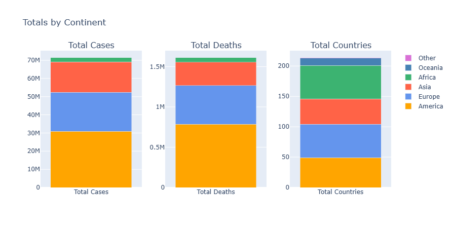
The stacked bar plot above shows the distribution of total cases and total deaths accross continents, we can see that Europe and North America are the most affected continents in terms of total cases and deaths, followed by Asia and South America. Africa is the least affected continent, even though it has a large number of countries. This might be an indicator of underreporting or lack of testing in Africa compared to other continents, or it could be due to other factors such as demographics, healthcare infrastructure, or even the fact that the pandemic reached Africa later than other continents.
3.2 Query 2: Countries stats
about: collecting metrics per country such as total
cases, total deaths, population and percentages of cases and deaths
relative to population
how?: using mongodb aggregation, will group by
country to get total cases/deaths and population, then calculate
percentages using $addFields stage
aim: get a detailed overview of the pandemic
situation per country
whats new: performing normalization of cases and deaths by population size getting use of 2 fields to create a 3rd one, good to make them comparable accross countries (especially for heatmap viz)
// 1) map per country
country_stats = db.worldwide_cases.aggregate([
{
$group: {
_id: "$countriesAndTerritories",
geoId: { $first: "$geoId" },
totalCases: { $sum: "$cases" },
totalDeaths: { $sum: "$deaths" },
popData2019: { $first: { $toInt: "$popData2019" }},
avg14DayIncidence: { $avg: "$Cumulative_number_for_14_days_of_COVID-19_cases_per_100000"
}
}
},
{
$addFields: {
percTotalCases: { $multiply: [ { $divide: ["$totalCases", "$popData2019"] }, 100 ] },
percTotalDeaths: { $multiply: [ { $divide: ["$totalDeaths", "$popData2019"] }, 100 ] },
}
}
])
Result:
_id: country namegeoId: country geo id-
totalCases: total number of cases in the country -
totalDeaths: total number of deaths in the country popData2019: country population in 2019-
percTotalCases: percentage of total cases relative to population -
percTotalDeaths: percentage of total deaths relative to population -
avg14DayIncidence: average 14-day incidence rate in the country
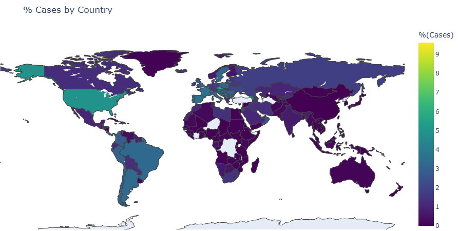
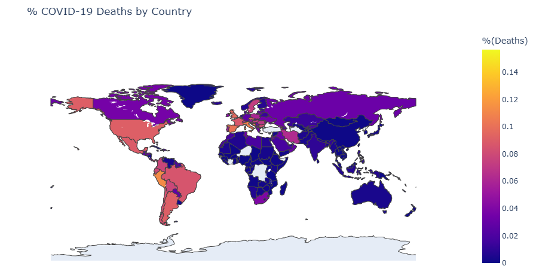
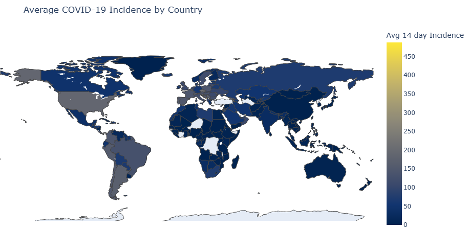
Here used the pycountry library in python to convert country names to map geoId to their corresponding 3-letter country codes (for plotly map visualization)
3.3 Query 3: USA daily stats
about: collecting daily total cases and deaths for
the USA, along with cumulative cases and deaths over time
how?: using mongodb aggregation, will first filter
for USA records, then group by date to get total cases/deaths per
day, finally use $setWindowFields stage to calculate
cumulative cases/deaths over time
aim: get a time series of the pandemic situation in
the USA, one of the most affected countries
whats new: using
$setWindowFieldsstage to calculate cumulative sums over time, useful for time series analysis. Also needing to match first before grouping (only usa)
db.worldwide_cases.find({ geoId: "US" }).limit(1)
country_daily_stats=db.worldwide_cases.aggregate([
{
$match: { geoId: "US" }
},
{
$group: {
_id: "$dateRep",
year: { $first: { $toInt: "$year" } },
month: { $first: { $toInt: "$month" } },
day: { $first: { $toInt: "$day" } },
totalCases: { $sum: "$cases" },
totalDeaths: { $sum: "$deaths" }
}
},
{
$sort: { year: 1, month: 1, day: 1 }
},
{
$setWindowFields: {
sortBy: { year: 1, month: 1, day: 1 },
output: {
cumulativeCases: {
$sum: "$totalCases",
window: { documents: ["unbounded", "current"] }
},
cumulativeDeaths: {
$sum: "$totalDeaths",
window: { documents: ["unbounded", "current"] }
}
}
}
},
])
result:
_id: date (day)year: yearmonth: monthday: day-
totalCases: total number of cases in the USA on that day -
totalDeaths: total number of deaths in the USA on that day -
cumulativeCases: cumulative number of cases in the USA up to that day -
cumulativeDeaths: cumulative number of deaths in the USA up to that day

p.s., could not put both cases and deaths in the same plot as they have very different scales, so had to split them into 2 plots each
3.4 Query 4: worldwide daily stats
about: collecting daily total cases and deaths
worldwide, along with cumulative cases and deaths over time
how?: using mongodb aggregation, will group by date
to get total cases/deaths per day, then use
$setWindowFields stage to calculate cumulative
cases/deaths over time
aim: get a time series of the pandemic situation
worldwide, to see the overall trend of the pandemic over time, good
for first glance analysis
// 3) total cases/deaths per day worldwide (can group by date)
worldwide_daily_stats=db.worldwide_cases.aggregate([
{
$group: {
_id: "$dateRep",
year: { $first: { $toInt: "$year" } },
month: { $first: { $toInt: "$month" } },
day: { $first: { $toInt: "$day" } },
totalCases: { $sum: "$cases" },
totalDeaths: { $sum: "$deaths" }
}
},
{
$sort: { year: 1, month: 1, day: 1 }
},
{
$setWindowFields: {
sortBy: { year: 1, month: 1, day: 1 },
output: {
cumulativeCases: {
$sum: "$totalCases",
window: { documents: ["unbounded", "current"] }
},
cumulativeDeaths: {
$sum: "$totalDeaths",
window: { documents: ["unbounded", "current"] }
}}
}
}
])
result:
_id: date (day)year: yearmonth: monthday: day-
totalCases: total number of cases worldwide on that day -
totalDeaths: total number of deaths worldwide on that day -
cumulativeCases: cumulative number of cases worldwide up to that day -
cumulativeDeaths: cumulative number of deaths worldwide up to that day
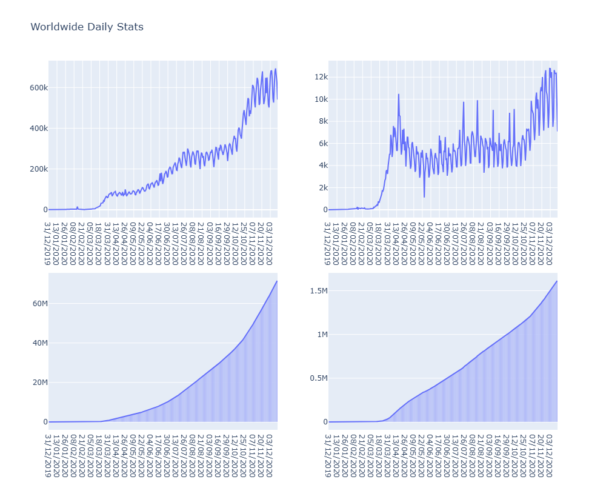
The time series plots above show the daily and cumulative cases and deaths worldwide over time. We can see that there are several waves of cases and deaths, with peaks occurring at different times, as it was at the start of the pandamic, the trend shows an increase glovally in cases and deaths, this is pronouced in the cumulative plost, where the derivative (slope) of the curve is itself increasing with time.
3.5 Query 5: cases/death weekly analysis
about: tracking weekly total cases and deaths
worldwide, along with average 14-day incidence rate and correlation
estimate between cases and deaths
how?: using mongodb aggregation, will group by ISO
week and year to get weekly total cases/deaths, average incidence
rate, and correlation estimate using the formula: corr(cases,
deaths) = E[cases*deaths] / (E[cases] * E[deaths])
aim: get a weekly overview of the pandemic
situation worldwide, also, what is interesting is something called
case fatality analysis which aims to find correlation
between the number of cases and the number of deaths, this can help
in predicting the number of deaths based on the number of cases,
useful for health authorities to plan resources accordingly
whats new: grouping by ISO week and year using
$isoWeekand$isoWeekYearoperators, also calculating correlation estimate using aggregation operators and some integration of complex formulae (was a bit hard to manage!)
// 4) cases/death correlation analysis
weekly_stats=db.worldwide_cases.aggregate([
{
$group: {
_id: {
year: { $isoWeekYear: "$date" },
week: { $isoWeek: "$date" }
},
weeklyCases: { $sum: "$cases" },
weeklyDeaths: { $sum: "$deaths" },
weekly14DayIncidence: { $avg: "$Cumulative_number_for_14_days_of_COVID-19_cases_per_100000" },
corr: { $avg: { $multiply: ["$cases", "$deaths"] } }
}
},
{
$project: {
year: "$_id.year",
week: "$_id.week",
weeklyCases: 1,
weeklyDeaths: 1,
weekly14DayIncidence: 1,
correlationEstimate: {
$cond: [
{ $eq: [{ $multiply: ["$weeklyCases", "$weeklyDeaths"] }, 0] },
null,
{ $divide: ["$corr", { $multiply: ["$weeklyCases", "$weeklyDeaths"] }] }
]
},
_id: 0
}
},
{ $sort: { year: 1, week: 1 } }
])
result:
year: ISO week yearweek: ISO week number-
weeklyCases: total number of cases worldwide in that week -
weeklyDeaths: total number of deaths worldwide in that week -
weekly14DayIncidence: average 14-day incidence rate worldwide in that week -
correlationEstimate: estimate of correlation between cases and deaths in that week
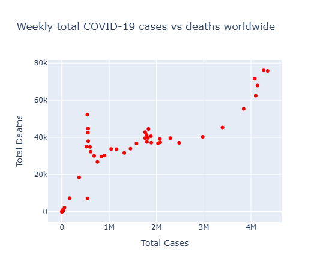
This is a common analysis done in epidemiology to understand the relationship between the number of cases and the number of deaths. A high correlation estimate indicates that there is a strong relationship between the two variables, meaning that as the number of cases increases, the number of deaths also tends to increase (can be useful for predicting the number of deaths based on the number of cases, which can help health authorities plan resources accordingly)
3.6 Query 6: collect the 14-day incidence rate worldwide per day for these 2 dates, group by country
about: collecting the 14-day incidence rate
worldwide per day for the earliest and latest dates in the dataset,
grouped by country
how?: using mongodb queries to find the earliest
and latest dates, then colelcting the incidence rates for those
dates across all entries (one entry per country in a day
actually)
aim: get a snapshot of the incidence rates at the
start and end of the dataset, useful for comparing how the situation
has evolved over time across countries. It's actually interesting if
one wants to test significance of change between 2 dates, while this
might not be ideal in this dataset (doesnt span over a long period
of time), the idea od performing statistical analysis still holds
(boxplots and comparisons)
// 5) collect the 14-day incidence rate worldwide per day for these 2 dates, group by country
earliest_date=db.worldwide_cases.find().sort({ date: 1 }).limit(1).next()
latest_date=db.worldwide_cases.find().sort({ date: -1 }).limit(1).next()
start_end_date_incidence_stats=db.worldwide_cases.find(
{ dateRep: { $in: [ earliest_date.dateRep, latest_date.dateRep ] } },
{ countriesAndTerritories: 1, geoId: 1, dateRep: 1,
"Cumulative_number_for_14_days_of_COVID-19_cases_per_100000": 1,
_id: 0
}
)
result:
countriesAndTerritories: country namegeoId: country geo iddateRep: date (day)-
Cumulative_number_for_14_days_of_COVID-19_cases_per_100000: 14-day incidence rate for that country on that date
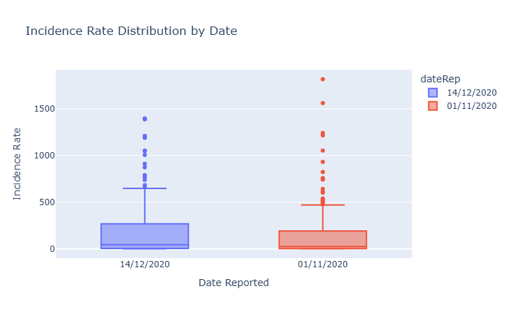
This can be useful to compare between 2 timepoints, boxplots will relveal distribution, based on which would be a statistical test to compare the 2 distributions (t-test, mann-whitney, etc.)
Hadoop
1. setup
Creating a hadoop container using the pulled image, then moving the mapper and reducer scripts into the container
docker run -it --name bigdata_hadoop prasanthj/docker-hadoop /etc/bootstrap.sh -bash
# docker start -i bigdata_hadoop
docker cp code/scripts/reducers/ bigdata_hadoop:/
docker cp code/scripts/mappers bigdata_hadoop:/
now inside the container
jps
export PATH=$PATH:$HADOOP_PREFIX/bin >> ~/.bashrc
source ~/.bashrc
hadoop version
2. data preperation
curl https://opendata.ecdc.europa.eu/covid19/casedistribution/csv/data.csv -o data/covid.csv
wc -l data/covid.csv
# 61901 covid.csv
the 1 is for the extra header file: same as the json data taken in mongodb
we will check if the datasets are different later on after processing
hdfs dfs -put data/covid.csv covid.csv
mkdir output/
mkdir logs/ # -- to save logs of hadoop jobs
So in here will:
- create output csv files resulting from mapreduce jobs
- create logs directory to save logs of hadoop jobs for later analysis (performance comparison with mongodb)
3. Queries
3.1 Query 1: continent stat
hadoop jar $HADOOP_COMMON_HOME/share/hadoop/tools/lib/hadoop-streaming-2.7.2.jar \
-D mapreduce.job.name="continent_stats" \
-files mappers/continent_stats_mapper.py,reducers/continent_stats_reducer.py \
-input covid.csv \
-output continent_stats/ > logs/continent_stats.log 2>&1
hdfs dfs -cat continent_stats/* > output/continent_stats.csv
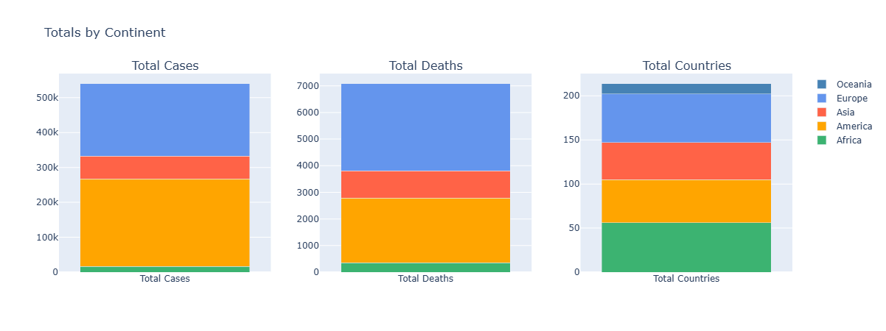
Similar trend as before with mongodb, Europe and North America most affected, Africa least affected, countries representation also similar
3.2 Query 2: country stats
hadoop jar $HADOOP_COMMON_HOME/share/hadoop/tools/lib/hadoop-streaming-2.7.2.jar \
-D mapreduce.job.name="country_stats" \
-files mappers/country_stats_mapper.py,reducers/country_stats_reducer.py \
-input covid.csv \
-output country_stats/ > logs/country_stats.log 2>&1
hdfs dfs -cat country_stats/* > output/country_stats.csv
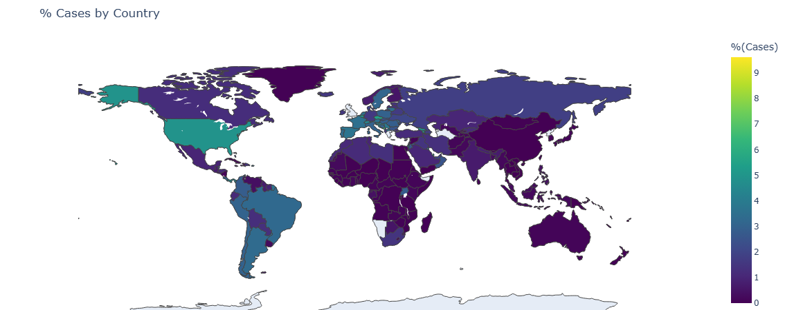
The cases map show some similarity with the one obtained with mongodb, with some differences in color intensity for some countries but generally we see:
- US and latin america highly affected
- Western Europe also with lighter colors
- Africa less overall
These discrepancies can be due to rounding errors or differences in how the data is processed in the mapreduce jobs compared to mongodb aggregations, as these percentages are quite small.
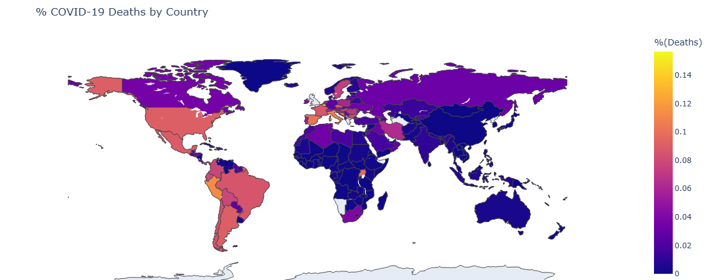
Also same for deaths map, similar trends but some differences in color intensity for some countries, overall the same observations hold.
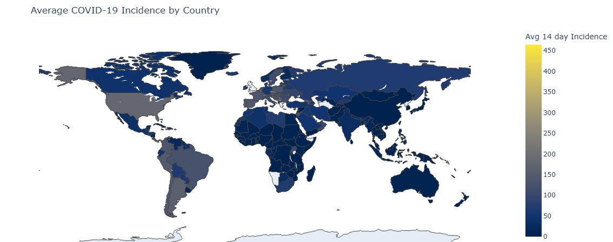
Same for incidence rate map.
3.3 Query 3: USA daily stats
# hdfs dfs -rm -r USA_daily_stats/
hadoop jar $HADOOP_COMMON_HOME/share/hadoop/tools/lib/hadoop-streaming-2.7.2.jar \
-D mapreduce.job.name="usa_daily_stats" \
-files mappers/USA_daily_stats_mapper.py,reducers/USA_daily_stats_reducer.py \
-mapper USA_daily_stats_mapper.py \
-reducer USA_daily_stats_reducer.py \
-input covid.csv \
-output USA_daily_stats/ > logs/USA_daily_stats.log 2>&1
hdfs dfs -cat USA_daily_stats3/* | awk -F '\t' '{print $2}' > output/USA_daily_stats.csv
3.4 Query 4: worldwide daily stats
hadoop jar $HADOOP_COMMON_HOME/share/hadoop/tools/lib/hadoop-streaming-2.7.2.jar \
-D mapreduce.job.name="worldwide_daily_stats" \
-files mappers/worldwide_daily_stats_mapper.py,reducers/worldwide_daily_stats_reducer.py \
-mapper worldwide_daily_stats_mapper.py \
-reducer worldwide_daily_stats_reducer.py \
-input covid.csv \
-output worldwide_daily_stats > logs/worldwide_daily_stats.log 2>&1
hdfs dfs -cat worldwide_daily_stats/* > output/worldwide_daily_stats.csv
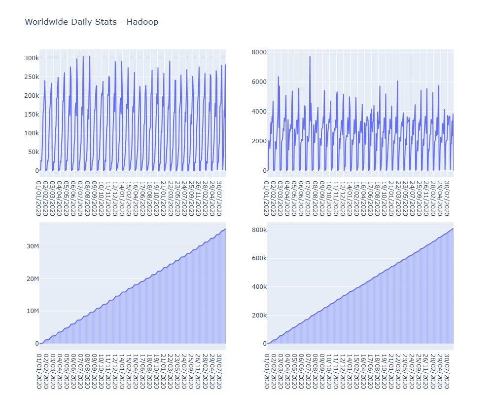
VERY IMPORTANT observation:
As we can see the worldwide trend here shows very high fluctuations
between maximal and minimal values, resembling a sinusoidal pattern
- while not particuallry epidemiologically sound, this is actually
due to reporting delays and weekly cycles in data collection and
reporting.
It's different from results in mongodb as the datasets taken are
practically coming from different files, even if it's the same
source ansd limited to a particular number of entries (also see
cumulative plot to be steadily inccreasing with
constant slope, which is extremly different from the former one)
This type of plot allow to check for such anomilies in data collection as we would be checking for daily changes in general and thus missing entries like days or countries can be directly spotted
3.5 Query 5:
hadoop jar $HADOOP_COMMON_HOME/share/hadoop/tools/lib/hadoop-streaming-2.7.2.jar \
-D mapreduce.job.name="weekly_stats" \
-files mappers/weekly_stats_mapper.py,reducers/weekly_stats_reducer.py \
-mapper weekly_stats_mapper.py \
-reducer weekly_stats_reducer.py \
-input covid.csv \
-output weekly_stats/ > logs/weekly_stats.log 2>&1
hdfs dfs -cat weekly_stats/* > output/weekly_stats.csv
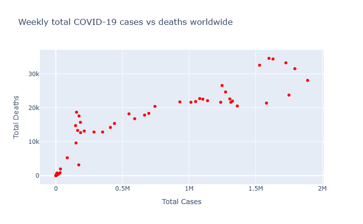
The cases vs deaths plot also shows a positive correlation, similar to mongodb, depicting important data trends.
3.6 Query 6:
hadoop jar $HADOOP_COMMON_HOME/share/hadoop/tools/lib/hadoop-streaming-2.7.2.jar \
-D mapreduce.job.name="start_end_date_incidence_stats" \
-files mappers/start_end_date_incidence_stats_mapper.py,reducers/start_end_date_incidence_stats_reducer.py \
-mapper start_end_date_incidence_stats_mapper.py \
-reducer start_end_date_incidence_stats_reducer.py \
-input covid.csv \
-output start_end_date_incidence_stats/ > logs/start_end_date_incidence_stats.log 2>&1
hdfs dfs -cat start_end_date_incidence_stats/* > output/start_end_date_incidence_stats.csv
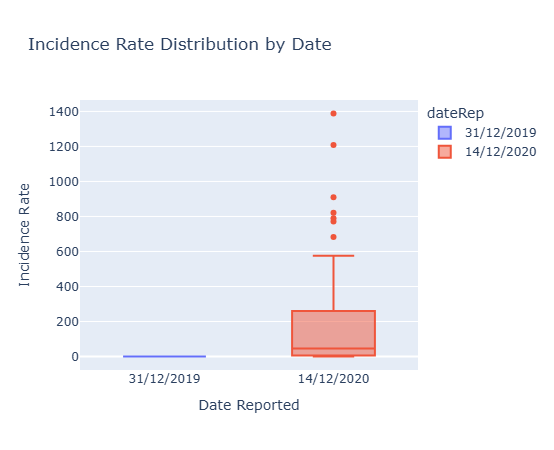
As previously seen, some days showed little to no entries in the dataset here, leading to some discrepancies in the boxplots compared to mongodb. In fact, one boxplot is complelty null, while not really depicting reality, it solidifies the idea that there is missing data here, and thus its not very plausible to perform a stat analysis using such data
Performance Analysis
For mongodb, we logged the performance of each query into a separate
collection called query_performance, which contains the
execution time and number of documents examined for each query (you
can find it in
output/mongodb/query_performance_stats.json).
For hadoop, we saved the logs of each job into the
logs/ directory, from which we can extract the
execution time and number of input records processed for each job
using this script:
python code/scripts/process_log.py output/hadoop/logs/ --output output/hadoop/MR_performance_stats.csv
Will analyze the 5 main queries in terms of time, documents/records
processed and compare between the 2 tools (this analysis was
performed in code/notebooks/performance_analysis.ipynb)
Time:
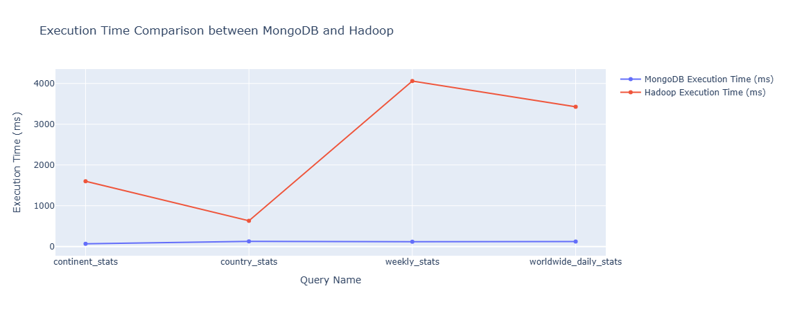
note, only 4 queries bcs some queries could not collected performance stats - for example, by the way start_end_date_incidence_stats query was implemented in mongodb, it was a cursor not an aggregation, thus could not collect same stats as others
Note the big difference between the 2 tools in terms of execution time, with mongodb being significantly faster than hadoop for all queries. This is expected as mongodb is optimized for such aggregations and can leverage indexes and in-memory processing, while hadoop relies on disk-based processing and shuffling data across nodes
Records/Documents processed:
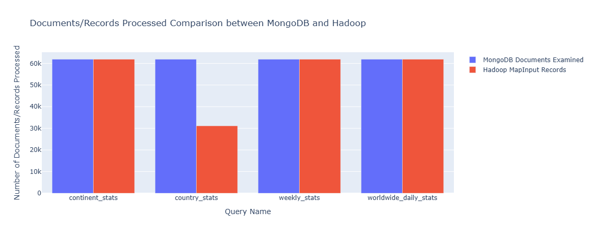
Here, we can see that both tools processed a similar number of records/documents for each query, with some minor differences due to the way data is grouped and aggregated in each tool. This indicates that both tools are capable of handling large datasets effectively, but mongodb has an edge in terms of speed for these types of aggregations, particularly one query was performed on significantly less in hadoop (aggregation on query). Not the case with continents for example as it was based on 2 aggregation stages in mongodb, thus more documents processed.
Some hadoop analysis:
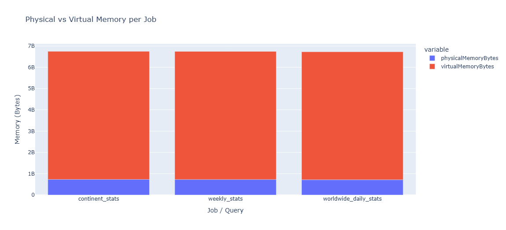
In hadoop, we can see that the physical memory used per job is significantly lower than the virtual memory => hadoop is effectively managing memory usage and avoiding excessive swapping to disk (important for performance, as excessive swapping can lead to slowdowns and increased execution times)
Closing notes:
pyspark was not done by the time of submission (will still push on github if finished it), had a couple of bugs in mapreduce that really affected time spent on this project (the mapper file should have the word "mapper" in it for instance, took me more than a day to debug this alone), working with mongodb was much more smoother and faster to implement and test.
Thank you for reading!